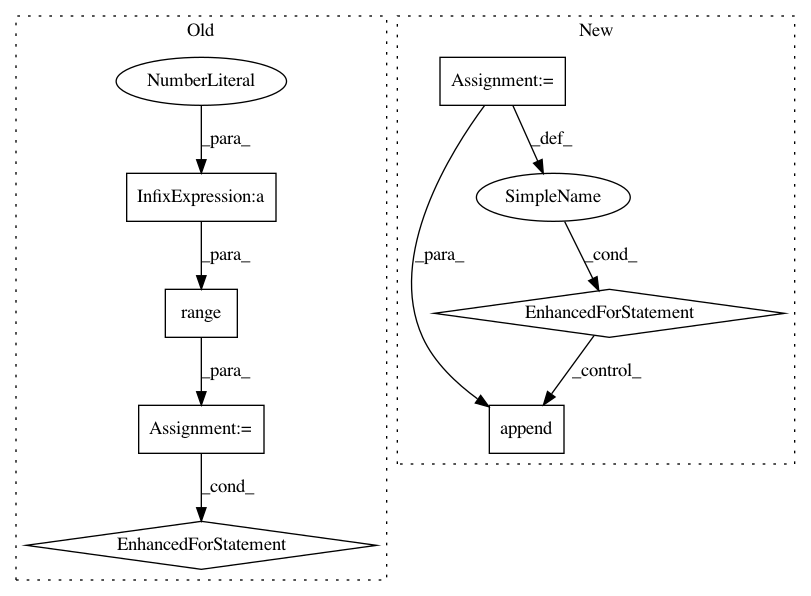

1cda66554188c4504aa94d1bcffd4cef9ee8a997,autokeras/net_transformer.py,,transform,#Any#,79
Before Change
def transform(model):
models = []
layers = model.layers
for index in range(len(layers) - 1):
if isinstance(layers[index], tuple(WEIGHTED_LAYER_FUNC_LIST)):
models.append(to_deeper_model(model, index))
models.append(to_wider_model(model, index))
return models
After Change
def transform(model):
models = []
conv_model = model.layers[0]
dense_model = model.layers[1]
for index, layer in enumerate(dense_model):
// search dense variation
if isinstance(layer, Dense):
models.append(Sequential(copy_conv_model(conv_model), to_deeper_dense_model(dense_model, index)))
models.append(Sequential(copy_conv_model(conv_model), to_wider_dense_model(dense_model, index)))
for layer in conv_model.layers:
// search conv variation
if is_conv_layer(layer):
models.append(Sequential(to_deeper_conv_model(conv_model, layer), dense_model))
In pattern: SUPERPATTERN
Frequency: 3
Non-data size: 7
Instances
Project Name: keras-team/autokeras
Commit Name: 1cda66554188c4504aa94d1bcffd4cef9ee8a997
Time: 2017-12-28
Author: jhfjhfj1@gmail.com
File Name: autokeras/net_transformer.py
Class Name:
Method Name: transform
Project Name: dmlc/gluon-cv
Commit Name: ee602b6f68f0bdd19f449a86955697f8f0a2d54c
Time: 2019-09-21
Author: yizhu59@gmail.com
File Name: gluoncv/data/transforms/video.py
Class Name: VideoCenterCrop
Method Name: forward
Project Name: dmlc/gluon-cv
Commit Name: ee602b6f68f0bdd19f449a86955697f8f0a2d54c
Time: 2019-09-21
Author: yizhu59@gmail.com
File Name: gluoncv/data/transforms/video.py
Class Name: VideoMultiScaleCrop
Method Name: forward